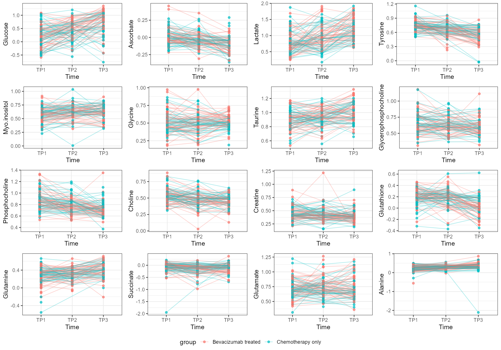
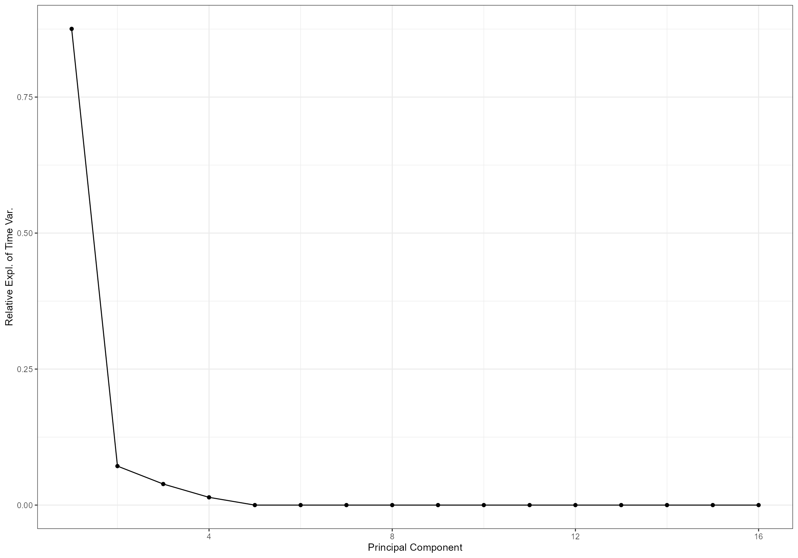
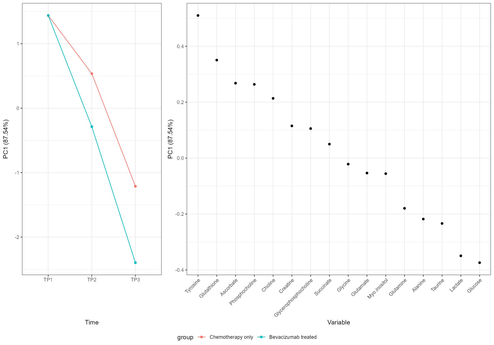
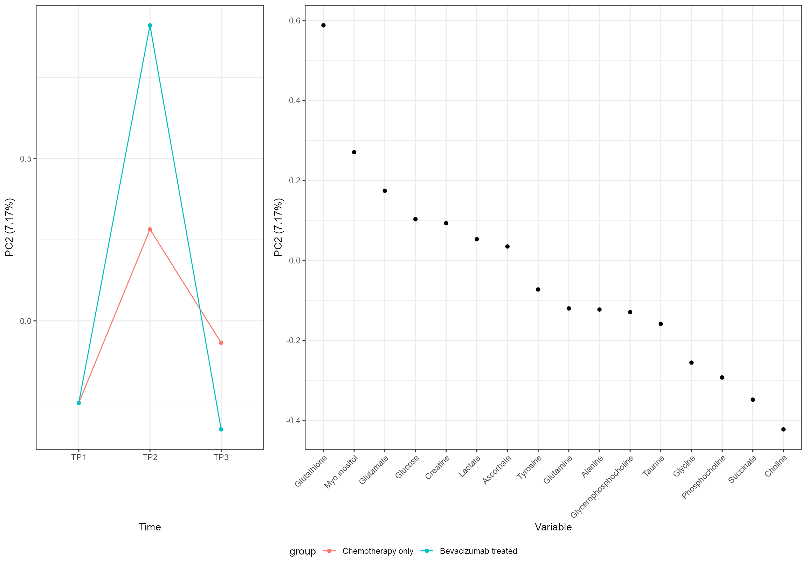
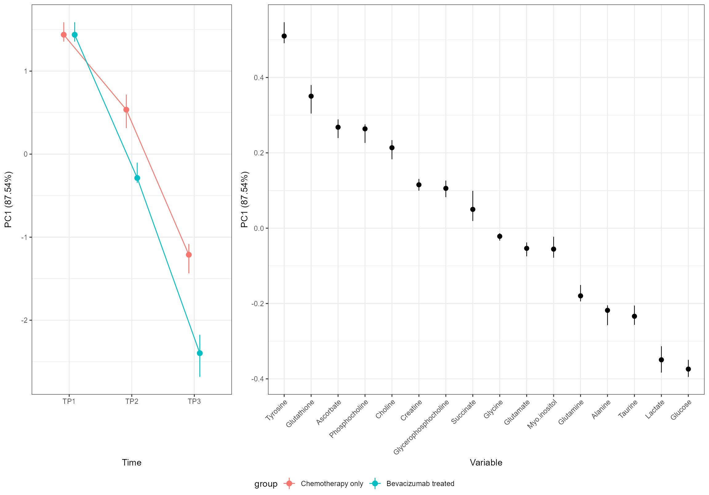
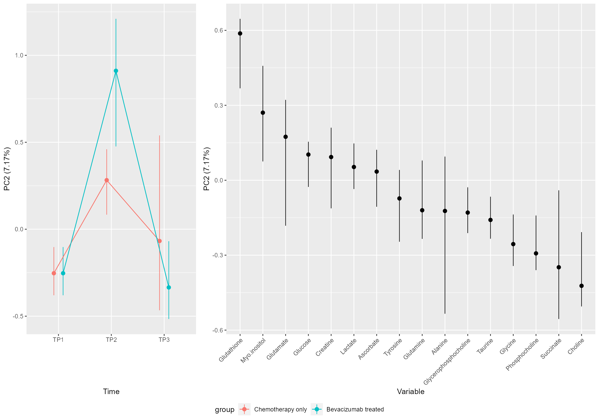
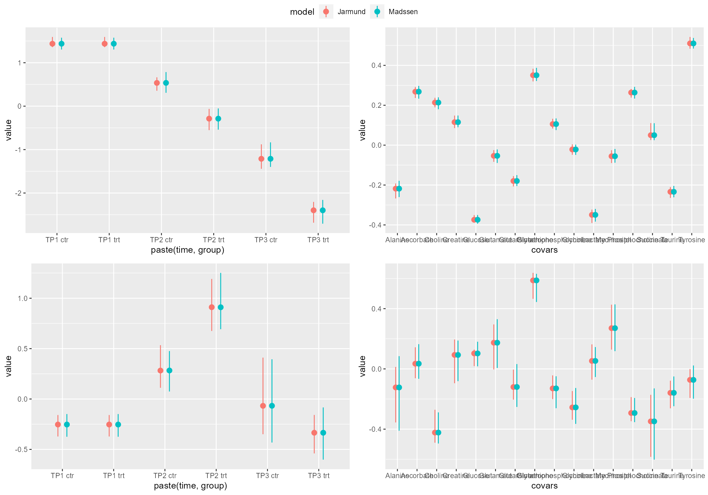

Metabolomics
Anders H. Jarmund
2021-02-12
metabolomics.RmdMetabolomics
This time we will look at a small metabolomics dataset by Euceda et al. (2017) and replicate the findings of Madssen et al. (2020). Note that this is an example of ALASCA applied on intervention data. If you are more interested in repeated measures observational data, have a look at the preeclampsia vignette. If you want an introduction to ALASCA, have a look at Get Started.
Let us start by having a quick look at it:
do.call(
ggarrange,
c(plotParts(df, participantColumn = "ID", valueColumn = "value", addSmooth = NA),
common.legend = TRUE, legend = "bottom")
)
All metabolite responses were log-transformed before analysis, and the effect matrix was mean-centered before PCA.
But our data is already log-transformed, and centering is handled by ALASCA(). However, as instructed by the authors, we need to scale each metabolite with the standard deviation at baseline. So let us set the desired reference groups and normalize:
Without any fuss, let us see what ALASCA makes out of it using the same model as Madssen et al. (2020). Note that we have to forceEqualBaseline to remove the interaction term for TP1 * treatment.
form <- value ~ time + time:group + (1|ID)
mod <- ALASCA(df, form, separateTimeAndGroup = FALSE, forceEqualBaseline = TRUE, scaleFun = scaleFun)
#> Will use linear mixed models!
#> Scaling data with custom function...
#> Calculating LMM coefficients...
#> Registered S3 methods overwritten by 'lme4':
#> method from
#> cooks.distance.influence.merMod car
#> influence.merMod car
#> dfbeta.influence.merMod car
#> dfbetas.influence.merMod car
#> fixed-effect model matrix is rank deficient so dropping 1 column / coefficient
#> fixed-effect model matrix is rank deficient so dropping 1 column / coefficient
#> fixed-effect model matrix is rank deficient so dropping 1 column / coefficient
#> fixed-effect model matrix is rank deficient so dropping 1 column / coefficient
#> fixed-effect model matrix is rank deficient so dropping 1 column / coefficient
#> fixed-effect model matrix is rank deficient so dropping 1 column / coefficient
#> fixed-effect model matrix is rank deficient so dropping 1 column / coefficient
#> fixed-effect model matrix is rank deficient so dropping 1 column / coefficient
#> fixed-effect model matrix is rank deficient so dropping 1 column / coefficient
#> fixed-effect model matrix is rank deficient so dropping 1 column / coefficient
#> fixed-effect model matrix is rank deficient so dropping 1 column / coefficient
#> fixed-effect model matrix is rank deficient so dropping 1 column / coefficient
#> fixed-effect model matrix is rank deficient so dropping 1 column / coefficient
#> fixed-effect model matrix is rank deficient so dropping 1 column / coefficient
#> fixed-effect model matrix is rank deficient so dropping 1 column / coefficient
#> fixed-effect model matrix is rank deficient so dropping 1 column / coefficient
#> Finished calculating regression coefficients!
#> Calculating predictions from regression models...
#> Finished calculating predictions from regression models!
#> Calculating effect matrix
#> Finished calculating effect matrix!Let us check that our model is as expected:
summary(mod$regr.model[[1]])
#> Linear mixed model fit by REML. t-tests use Satterthwaite's method [
#> lmerModLmerTest]
#> Formula: object$newFormula
#> Data: subset(object$df, variable == i)
#>
#> REML criterion at convergence: 761.7
#>
#> Scaled residuals:
#> Min 1Q Median 3Q Max
#> -2.9769 -0.4910 0.1554 0.5865 2.2444
#>
#> Random effects:
#> Groups Name Variance Std.Dev.
#> ID (Intercept) 0.2480 0.4980
#> Residual 0.7558 0.8694
#> Number of obs: 270, groups: ID, 122
#>
#> Fixed effects:
#> Estimate Std. Error df t value
#> (Intercept) 0.49104 0.09724 252.05390 5.050
#> XtimeTP2 0.37490 0.16984 211.02402 2.207
#> XtimeTP3 0.90964 0.17427 220.72035 5.220
#> XtimeTP2:groupBevacizumab treated 0.40580 0.21992 256.50552 1.845
#> XtimeTP3:groupBevacizumab treated 0.55303 0.20953 258.87566 2.639
#> Pr(>|t|)
#> (Intercept) 8.49e-07 ***
#> XtimeTP2 0.02837 *
#> XtimeTP3 4.13e-07 ***
#> XtimeTP2:groupBevacizumab treated 0.06616 .
#> XtimeTP3:groupBevacizumab treated 0.00881 **
#> ---
#> Signif. codes: 0 '***' 0.001 '**' 0.01 '*' 0.05 '.' 0.1 ' ' 1
#>
#> Correlation of Fixed Effects:
#> (Intr) XtmTP2 XtmTP3 XTP2:t
#> XtimeTP2 -0.451
#> XtimeTP3 -0.449 0.312
#> XtmTP2:grBt -0.001 -0.615 -0.084
#> XtmTP3:grBt 0.013 -0.096 -0.670 0.139
#> fit warnings:
#> fixed-effect model matrix is rank deficient so dropping 1 column / coefficientAnd now, let us plot it:
screeplot(mod)
And compare to the original plot:


Note that we used the function to flip the loadings and scores to produce similar plots as in the original article.
plot(mod, component = 2)
As we can see, it looks indeed as a very good match with the original findings.
Let us validate our model (outside knitr, it uses about 2 seconds per run),
mod$nValRuns = 10
mod.val <- validate(mod, participantColumn = "ID", validateRegression = TRUE)
#> Running validation...
#> - Run 1 of 10
#> --- Used 1.76 seconds. Est. time remaining: 15.85 seconds
#> - Run 2 of 10
#> --- Used 1.73 seconds. Est. time remaining: 13.95 seconds
#> - Run 3 of 10
#> --- Used 1.75 seconds. Est. time remaining: 12.22 seconds
#> - Run 4 of 10
#> --- Used 1.78 seconds. Est. time remaining: 10.53 seconds
#> - Run 5 of 10
#> --- Used 1.81 seconds. Est. time remaining: 8.83 seconds
#> - Run 6 of 10
#> --- Used 1.77 seconds. Est. time remaining: 7.07 seconds
#> - Run 7 of 10
#> --- Used 1.79 seconds. Est. time remaining: 5.31 seconds
#> - Run 8 of 10
#> --- Used 1.64 seconds. Est. time remaining: 3.51 seconds
#> - Run 9 of 10
#> --- Used 1.8 seconds. Est. time remaining: 1.76 seconds
#> - Run 10 of 10
#> --- Used 1.78 seconds. Est. time remaining: 0 secondsThe result:
plot(mod.val)
plot(mod.val, component = 2)
Or if want to see the validation models instead of errorbars:
#plotVal(mod.val)
#plotVal(mod.val, component = 2)Comparison of result
To better visualize the agreement between the ALASCA package and the published code by Madssen et al. (2020), I’ve run both and collected the loadings and scores for P1 and PC2. Although there are some variation in the robustness estimates, the two implementations seem to match reasonable well.

Regression models
Sometimes it may be difficult to interpret the ALASCA plots and you may wish to visualize the underlying regression models. The ALASCA package features a function for that: plotPred():